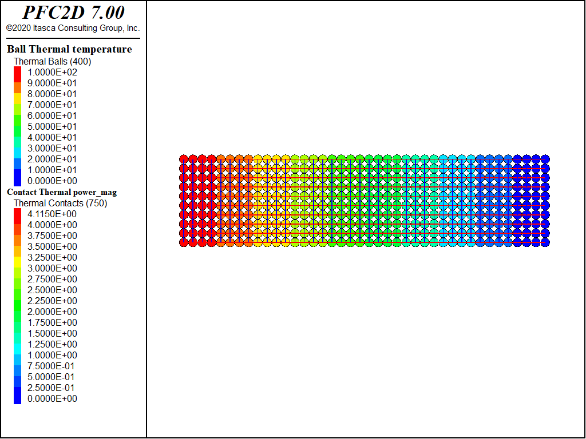
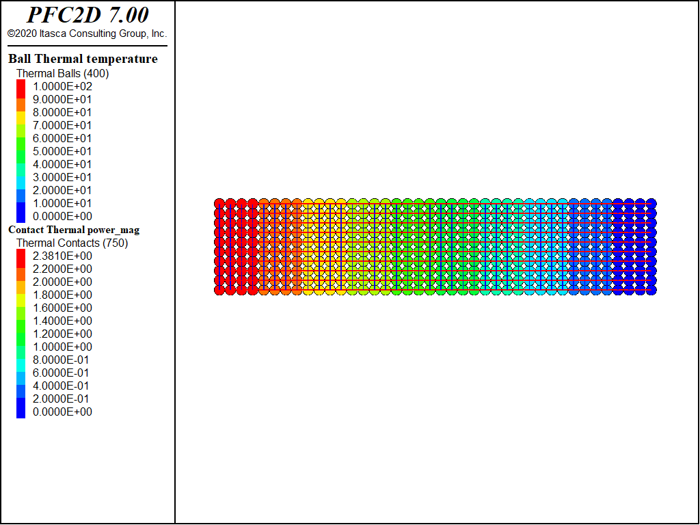
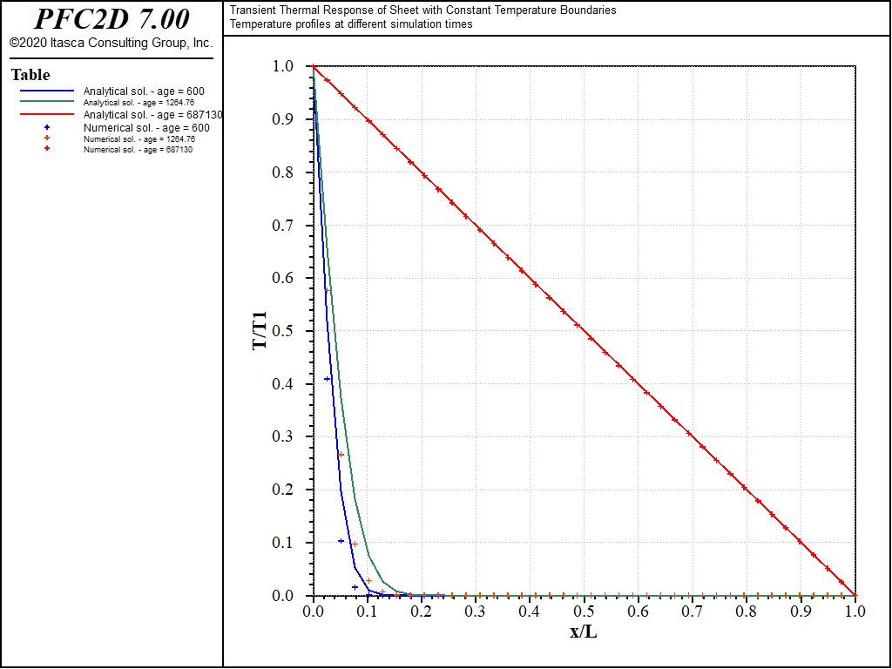

恒定温度边界薄板的瞬态热响应
注意
本算例的项目文件可在 PFC 中查看或运行。[1]所用的数据文件（data files）列于本算例末尾。
一块宽度为 \(L\) 的平面薄板初始温度为 0°C。薄板左侧暴露于 100°C 的恒定温度，右侧保持 0°C。薄板最终在恒定热流和不变温度分布下达到平衡状态。薄板内温度随距左侧距离 \(x\) 和时间 \(t\) 变化的解析解由 [Crank1975] 给出
其中 \(T_1\) 为薄板左侧温度（等于 100°C），\(\kappa\) 为热扩散率，由下式给出
其中 \(k\) 为导热系数，\(\rho_t\) 为材料密度，\(C_v\) 为定容比热。
数值模型
该热学问题为一维问题，可建模为薄材料切片，其左右边界施加恒定温度，上下边界采用绝热条件以表示热对称面。
对于本例，我们创建两个不同的 PFC2D 模型，分别由立方堆积和六边形堆积组成（见 图 1（Figures 1） 和 图 2）。对于这两种均匀堆积，孔隙率和热阻可解析表示。孔隙率由 [Deresiewicz1958b] 给出：
热阻通过将 PFC 热学公式一节的 式 (28)（Equation (28)） 应用于围绕一个颗粒的控制体求得，并注意到控制体内每根热管长度等于颗粒半径 \(R\)，从而得到
其中 \(t\) 为圆盘厚度（本例中等于 1）。用于执行模拟的数据文件为“transient_sheet.dat”。它使用“transient_sheet-utils.p2fis”中定义的 FISH 函数。指定热学性质和边界条件后，每个模型分别运行 50 和 200 个循环，直到达到热平衡状态（使用 求解模型（model solve） 命令）。立方堆积和六边形堆积试样在递增热学时间下的归一化温度分布与解析解一并绘制于 图 3（Figures 3） 和 图 4 中。PFC2D 的响应与解析解吻合良好。


图 1：球颗粒温度等值线及热功率矢量场（PFC2D 立方堆积）。


图 2：球颗粒温度等值线及热功率矢量场（六边形堆积）。



图 4：递增热学时间下六边形堆积的模拟与解析归一化温度分布。
参考文献
| [Crank1975] | Crank, J. 《扩散数学》（第 2 版）。牛津：牛津大学出版社，1975。 |
| [Deresiewicz1958b] | Deresiewicz, H.《颗粒材料力学》，载于 《应用力学进展》，第 5 卷，第 233-306 页。H. L. Dryden 和 Th. von Karman 编。纽约：Academic Press，1958。 |
数据文件
transient_sheet.dat
; 文件名：transient_sheet.dat (2D)
;
; Itasca Consulting Group, Inc.
; ========================================================================
; 热学选项示例：
; 施加热流的半无限固体瞬态响应
; （立方和六方堆积）
;
; ========================================================================
program log-file 'transient_sheet.log'
program log on
; ========================================================================
model new
model large-strain on
model configure thermal
model mechanical off thermal on
program echo off
program call 'transient_sheet-utils.p2fis'
program echo on
[global t1 = 'Transient Thermal Response of Sheet']
[global t2 = ' with Constant Temperature Boundaries']
model title [t1 + t2]
[init_params]
model save 'transient_sheet-ini'
[n_row = 10]
[n_col = 40]
[_pack_type = 1]
[close_pack(n_row,n_col,_pack_type)]
;
model solve thermal time-total 600.0
[num_soln]
[ana_soln]
model solve thermal time-total 1200.0
[num_soln]
[ana_soln]
model solve thermal unbalanced-maximum 1e-3
[num_soln]
[ana_soln]
;
model save 'transient_sheet-cubic'
model res 'transient_sheet-ini'
[n_row = 10]
[n_col = 40]
[_pack_type = 2]
[close_pack(n_row,n_col,_pack_type)]
model thermal timestep max 1.0e2
model solve thermal time-total 600.0
[num_soln]
[ana_soln]
model solve thermal time-total 1200.0
[num_soln]
[ana_soln]
model solve thermal unbalanced-maximum 1e-3
[num_soln]
[ana_soln]
;
mode save 'transient_sheet-hexa'
; ========================================================================
program log off
program return
;文件结束：transient_sheet.dat (2D)
transient_sheet-utils.p2fis
;文件名：transient_sheet-utils.p2fis
;
; Itasca Consulting Group, Inc.
; ============================================================================
; 用于热学选项验证问题的工具函数
; ============================================================================
;
; ----------------------------------------------------------------------------
fish define init_params
global id_start=1
global x0 = 0.0
global y0 = 0.0
global radius = 1.0
global epsilon = 1.0e-6
;
global c_k = 1.6 ; 热导率
global c_cv = 0.2 ; 比热容
global c_dens = 1000.0 ; density
global c_kappa = c_k / (c_dens*c_cv)
global t1 = 100.0 ; 沿左侧的温度
global tabn_start = 10
global tabe_start = 11
global tabn = tabn_start
global tabe = tabe_start
global n_row = 10
global n_col = 50
global _pack_type = 1
global n_tot = 100 ; 所用的解析解项数
global final_params
global therm_props
global therm_bcs
end
; ----------------------------------------------------------------------------
fish define close_pack(nrow_,ncol_,type_)
global xc = x0
global yc = y0
global rc = radius
global idc = id_start
local r2 = 2.0 * rc
global dom_xmin = x0 - 4.0 *r2
global dom_xmax = x0 + ncol_*r2 + 4.0 *r2
global dom_ymin = y0 - 4.0 *r2
global dom_ymax = y0 + nrow_*r2 + 4.0 *r2
command
model domain extent [dom_xmin] [dom_xmax] [dom_ymin] [dom_ymax]
endcommand
case_of type_
case 1
yinc = radius * 2.0
case 2
yinc = radius * math.sqrt(3.0)
end_case
loop local row (1,nrow_)
loop local col (1,ncol_)
command
ball create id=[idc] position-x=[xc] position-y=[yc] ...
radius=[rc*(1 + epsilon)]
end_command
idc = idc + 1
xc = xc + r2
end_loop
yc = yc + yinc
case_of type_
case 1
xc = x0
case 2
xc = x0 + radius * (row - (row/2) * 2)
end_case
end_loop
final_params
therm_props
therm_bcs
end
; ----------------------------------------------------------------------------
fish define final_params
global c_len = (n_col-1)*2.0*radius
end
; ----------------------------------------------------------------------------
fish define therm_props
;
if _pack_type = 1 then
poros = 1.0 - (math.pi/4.0)
_eta = 1.0 / (2.0 * c_k * radius)
else
poros = 1.0 - math.pi/(2.0*math.sqrt(3.0))
_eta = 3.0 / (2.0*math.sqrt(3.0) * c_k * radius)
end_if
_dens = c_dens / (1.0 - poros)
command
contact cmat default model Linear
contact cmat thermal default model ThermalPipe property thres=[_eta]
contact cmat thermal default inherit thres off
ball attribute density=[_dens]
ball thermal attribute specific-heat=[c_cv]
model clean
end_command
end
; ----------------------------------------------------------------------------
fish define therm_bcs
;
global _xl1 = -0.01*radius
global _xr1 = _xl1 + 1.01*radius
global _xl2 = c_len - 0.01*radius
global _xr2 = _xl2 + 1.01*radius
command
ball thermal init temp 0.0
ball thermal init temp [t1] range position-x=([_xl1], [_xr1]) ; 左侧
ball thermal fix range position-x=([_xl1], [_xr1]) ; 左侧
ball thermal fix range position-x=([_xl2], [_xr2]) ; 右侧
end_command
end
; ----------------------------------------------------------------------------
fish define num_soln
;
; ----- 数值解（沿底部一排球）
global tname = string.build("Numerical sol. - age = %1",thermal.time.total)
local t = table.create(tabe)
table.label(t) = tname
tabe +=2
loop foreach local btp ball.thermal.list
local bp = ball.thermal.ball(btp)
if ball.pos(bp,2) = 0.0 then
local _z = ball.pos(bp,1)
local _tz = _z / c_len
table(t, _tz) = ball.thermal.temp(btp) / t1
end_if
end_loop
end
; ----------------------------------------------------------------------------
fish define ana_soln
;
; ----- 解析解（沿底部一排球）。
; 不进行收敛性检验，直接取前 [n_tot] 项。
global tname = string.build("Analytical sol. - age = %1",thermal.time.total)
local t = table.create(tabn)
table.label(t) = tname
tabn +=2
loop foreach local btp ball.thermal.list
local bp = ball.thermal.ball(btp)
if ball.pos(bp,2) = 0.0 then
local _z = ball.pos(bp,1)
local n = 0
local tsum = 0.0
loop while n < n_tot
n = n + 1
fn = float(n)
local term = math.sin(math.pi*_z*fn/c_len)
term = term * math.exp(-c_kappa*fn*fn*math.pi*math.pi* ...
thermal.time.total/(c_len*c_len))/fn
tsum = tsum + term
end_loop
_tz = _z / c_len
table(t, _tz) = 1.0 - _z/c_len - (2.0/math.pi)*tsum
end_if
end_loop
end
; ----------------------------------------------------------------------------
fish define init_params
global id_start=1
global x0 = 0.0
global y0 = 0.0
global radius = 1.0
global epsilon = 1.0e-6
;
global c_k = 1.6 ; 热导率
global c_cv = 0.2 ; 比热容
global c_dens = 1000.0 ; density
global c_kappa = c_k / (c_dens*c_cv)
global t1 = 100.0 ; 沿左侧的温度
global tabn_start = 10
global tabe_start = 11
global tabn = tabn_start
global tabe = tabe_start
global n_row = 10
global n_col = 50
global _pack_type = 1
global n_tot = 100 ; 所用的解析解项数
end
; ============================================================================
;文件结束：transient_sheet-utils.p2fis
尾注
| [1] | 要在 PFC 中查看本项目，请使用程序菜单。
⮡ PFC |
| 这些内容对您有帮助吗？… | FLAC3D © 2019, Itasca | 原文更新于 2020 年 10 月 8 日 |